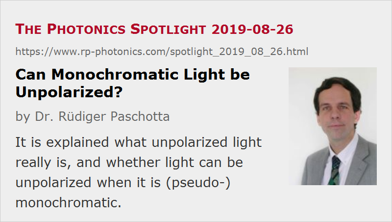

Can Monochromatic Light be Unpolarized?
Posted on 2019-08-26 as a part of the Photonics Spotlight (available as e-mail newsletter!)
Permanent link: https://www.rp-photonics.com/spotlight_2019_08_26.html
Author: Dr. Rüdiger Paschotta, RP Photonics Consulting GmbH
Abstract: It is explained what unpolarized light really is, and whether light can be unpolarized when it is (pseudo-)monochromatic.

At a first glance, one may think that the optical bandwidth of light and its polarization are totally unrelated things, and many people may answer the question “Can monochromatic light be unpolarized” with “Sure, why not?”. However, it actually turns out to be an interesting and non-trivial question.
What is Unpolarized Light?
We need to think about what it really means for light to be unpolarized. In any moment of time where the electric field at a certain position in space doesn't happen to be zero, the electric field vector points in a certain direction. In that sense, light is always polarized! However, there are situations where the orientation of the electric field vector fluctuates such that when averaging over a certain time interval we do not find any preferred field orientation – the light is then indeed unpolarized.
We can also consider a situation where the electric field vector systematically rotates around the propagation axis. If the rotation frequency equals the optical frequency, we then have circularly (or elliptically) polarized light, for lower rotation frequencies linearly polarized light with a rotating polarization direction – in any case, no unpolarized light! So for unpolarized light we indeed need random fluctuations, not a systematic evolution of field vector direction.
Fluctuations Imply Non-Monochromacy
Now it is clear that such fluctuations, which are indispensable for light to be unpolarized, cannot occur for strictly monochromatic light, because there we cannot have any fluctuations – only a perfectly periodic oscillation of electrical and magnetic field. In conclusion, strictly monochromatic light cannot be unpolarized.
Quasi-monochromatic Light
In practice, however, we are often dealing with quasi-monochromatic light. That means that the optical bandwidth is so small that in some respects it is equivalent to a zero bandwidth. For example, we could not resolve the optical spectrum with any ordinary optical spectrum analyzer. As a numerical example, we may have a bandwidth of 1 MHz, which is orders of magnitude less than the mean optical frequency, which is hundreds of terahertz for visible light. That bandwidth implies that we can have significant changes of field vector direction within one microsecond (the inverse of the bandwidth). When averaging over 1 ms, for example, we may find the light to be completely unpolarized. In such a situation, one could say that although the light is quasi-monochromatic in some sense (e.g. for our spectrum analyzer), it is sufficiently non-monochromatic to be unpolarized.
Divergent Beams
We often consider only plane waves, representing the mathematically simplest field distribution. However, we can also think about a divergent beam, which can be considered to be a linear superposition of plane waves with somewhat different propagation directions. (This idea is the basis of Fourier optics.) Now we might assume that the different plane waves do not only differ in terms of propagation direction, but also a randomly varying polarization directions. Couldn't that lead to unpolarized light even if it is perfectly monochromatic?
When inspecting the electric field at any fixed point in the beam profile, the answer is no; the arguments presented above fully apply. However, we may get unpolarized light in the weak sense that the transmission of optical power of the complete beam through a polarizer will be independent of the orientation of that polarizer. That is not truly unpolarized light, however: the transmission trough a polarizer will exhibit a fixed spatial pattern.
Polarization Scramblers
There are devices (called depolarizers or polarization scramblers) which can be used for converting polarized light into unpolarized light. Our discussion makes clear that those need to introduce some fluctuating time dependence, if we need unpolarized light at every location across the beam profile. For example, one may use a Pockels cell which is driven with a randomly fluctuating electric signal (or a combination of multiple cells). With such kind of devices, one can for example depolarize a linearly polarized laser beam. The shorter the measurement time over which the light needs to be unpolarized, the larger must be the bandwidth of the applied noise modulation.
Note that we then still have a strong correlation of field vector orientations across the beam profile – in contrast to a beam of sunlight, for example.
Clearly, unpolarized light is more difficult to understand than polarized light, essentially because it involves statistical aspects.
This article is a posting of the Photonics Spotlight, authored by Dr. Rüdiger Paschotta. You may link to this page and cite it, because its location is permanent. See also the RP Photonics Encyclopedia.
Note that you can also receive the articles in the form of a newsletter or with an RSS feed.
Questions and Comments from Users
Here you can submit questions and comments. As far as they get accepted by the author, they will appear above this paragraph together with the author’s answer. The author will decide on acceptance based on certain criteria. Essentially, the issue must be of sufficiently broad interest.
Please do not enter personal data here; we would otherwise delete it soon. (See also our privacy declaration.) If you wish to receive personal feedback or consultancy from the author, please contact him e.g. via e-mail.
By submitting the information, you give your consent to the potential publication of your inputs on our website according to our rules. (If you later retract your consent, we will delete those inputs.) As your inputs are first reviewed by the author, they may be published with some delay.
|  |
If you like this page, please share the link with your friends and colleagues, e.g. via social media:
These sharing buttons are implemented in a privacy-friendly way!